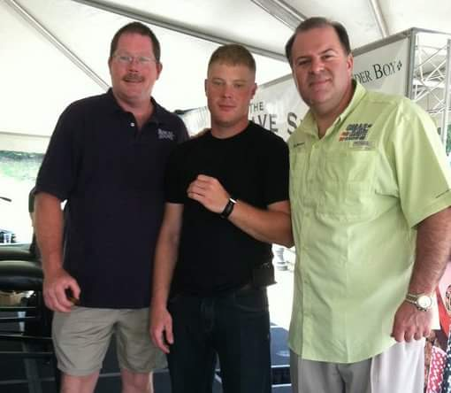

About Me
I am 30 years old, and a graduate of UNCC's Mechanical Engineering Technology. I started my collegiate journey in 2005, and took a 6 year break, 4 of which I spent in the United States Marine Corps as an Infantry Marine (2 tours to Afghanistan). After leaving the Corps I went back to UNCC to finish my degree, finishing in 2016. My first introduction to coding came in my senior year, during my Instrumentation and Controls class, where I began messing around with Arduino (Micro-controllers coded written in C) and PLC controllers and Relay Ladder Logic (RsLogix 5000 by rockwell automation). I currently work for Schneider Electric in their BAS group (Building Automation Systems) creating user interfaces and some programming for HVAC and Lighting Control.
I am excited to dive deeper into the wonderful world of programming.
Connect with Me